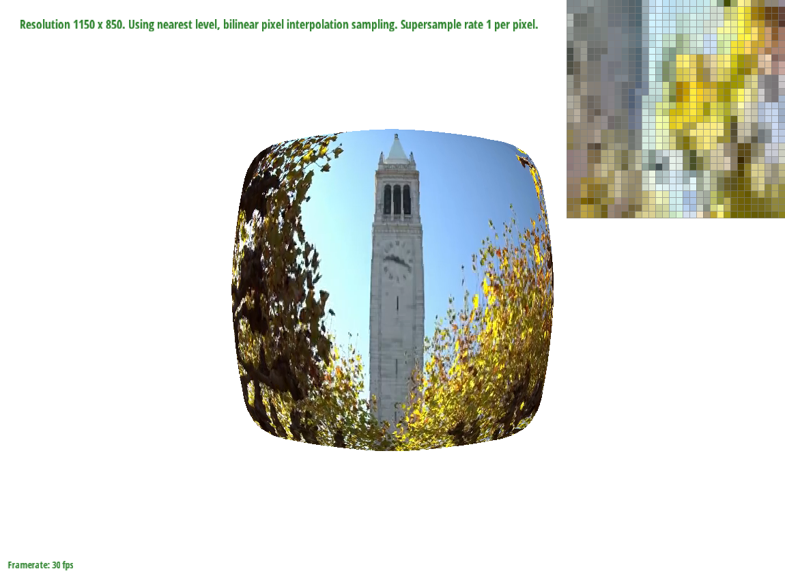
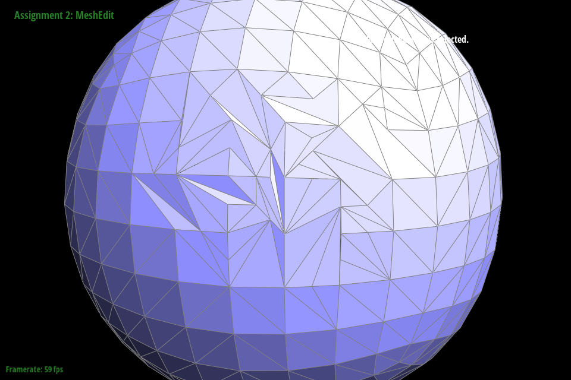
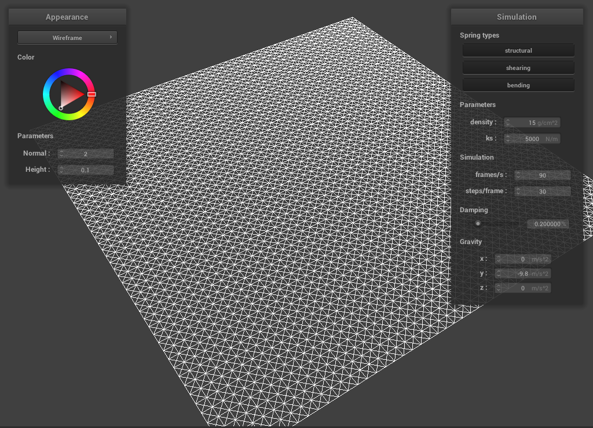
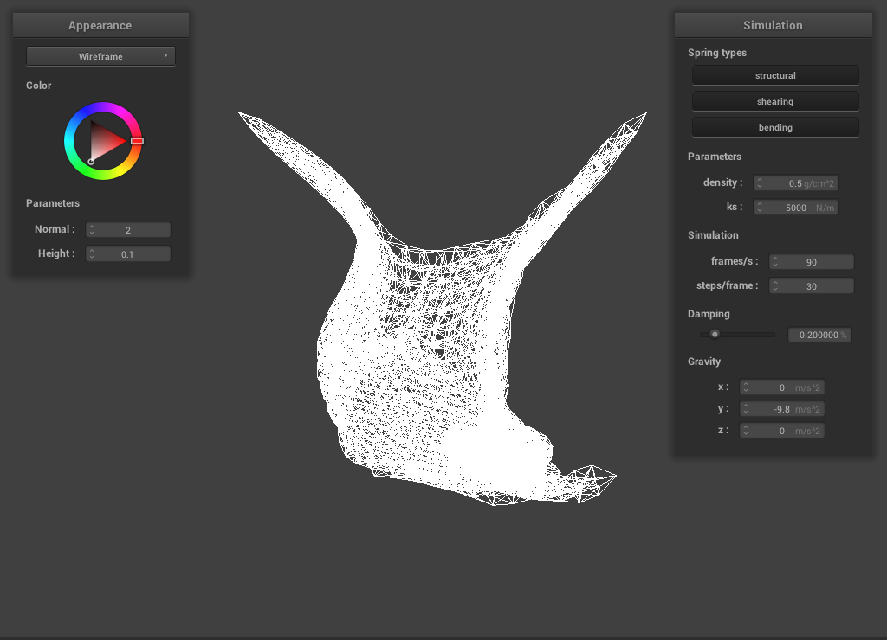

CS 184: Computer Graphics and Imaging, Spring 2020
Project 1: Rasterizer
Brian Fu, CS184
Overview
This project is an engine for rendering SVG files with color interpolation or texture mapping.
On a high level, it functions by rasterizing meshes of triangles where each triangle is sampled
over individually and placed into a supersample buffer. The sampling level determines the number
of samples per pixel and takes the average color of the samples in each pixel to determine its
color.
I implemented two methods to determining what color to make each triangle. The first method is
color interpolation where the color of each corner of each triangle is determined. Then each
pixel within the triangle is colored by a weighted average from those three corners. The second
method is texture mapping. Given a mesh of triangles and an image, I mapped each triangle in the
mesh to an area in the image and sampled across from each. These triangles could be stretched and
transformed to fit 3d objects.
Section I: Rasterization
Part 1: Rasterizing single-color triangles
Rasterizing single-color triangles centers on efficiently determining whether a pixel is inside
or outside a triangle for every triangle in the image. Since this operation is performed so many
times, it is especially important for it to have a fast runtime complexity. My rasterizing
algorithm works by determining the x and y domains for each triangle to reduce the number of
pixels to iterate over. Then for each pixel, I used Barycentric coordinates to determine whether
it is inside a triangle or not. I then colored the pixels that are inside the triangle.
Rendering triangles.
Note that there are floating pixels due to low sampling rate even though the triangles are
continuous in the svg file.
This is fixed in Part 2
Part 2: Antialiasing triangles
This rendering engine handles antialiasing through supersampling. Supersampling takes multiple
samples within each pixel and averages their colors instead of using a single sample. This is
useful if an object intersects part of a pixel but does not cross the center where the sample is
taken. A low sample rate would leave the pixel empty where a high sample rate would give the
pixel a light shading.
|
Sample Rate: 1
|
Sample Rate: 4
|
Sample Rate: 16
|
In order to implement this, I added a supersample buffer to the triangle rasterization process.
This buffer is a one-dimentional vector of size: width * height * sample_rate so
that the supersamples in pixel (x, y) can be found at indicies
(y * width + x) * sample_rate + s where s is the index of each supersample within
each pixel. After every triangle has been sampled, every super sample index within each pixel is
down sampled (averaged) to determine what color that pixel will be.
Part 3: Transforms
Greater control over objects can be given using transform matrices. Each transform is a 3x3
matrix that translates, scales, or rotates an object by a specified amount.
Section II: Sampling
Part 4: Barycentric coordinates
The barycentric coordinate system uses the proportionate distance a point is from each of the
three vertices of its triangle to determine its position. This gives three values: alpha, beta,
and gamma to label each point. If the point is inside the triangle,
alpha + beta + gamma = 1 . We can set each vertex to red, green, and blue and color
each pixel as the weighted average of the distance to each vertex given by the alpha, beta and
gamma value of that pixel.
Pixels closest to each vertex represent that color strongest. Pixels
in the middle are the average of the colors of the vertices due to their distance.
We can sequence a number of triangles into a circle with similar border colors to generate a
smooth gradient.
Circle
Part 5: "Pixel sampling" for texture mapping
Pixel mapping from textures differs from color interpolation in that the colors are not set by
the svg file but rather by a separate image. The two types of texture sampling for this project
were sample nearest and sample bilinear.
Sample nearest works by sampling the center of the texture pixel closest to the texture
coordinates (tx, ty) converted from linear (rasterization) coordinates
(x, y) described by a vector [u, v] .
Sample bilinear works by sampling the four texture pixels closest to the texture coordinate and
returning the color that is the weighted average of those four texture pixels based on distance.
This should supply a smoother texture palate due to its more continuous nature.
|
Sample Nearest, 1 sample/pixel
|
Sample Nearest, 16 samples/pixel
|
|
Sample Bilinear, 1 sample/pixel
|
Sample Bilinear, 16 samples/pixel
|
Sample bilinear will often have softer edges compared to sample nearest especially with low
sample rates because edges will not be antialiased. Tiny details will also be softly captured
better by bilinear as sample nearest may skip over specific texels.
Part 6: "Level sampling" with mipmaps for texture mapping
Mipmaps are pre-scaled texture maps that save important details of an image when rendering at
various magnifications. An very zoomed out image without mipmaps may lose important details due
to the averaging of pixel colors. For instance, a zoomed out face might lose its eyes since the
average space is filled by the skin colors. I implemented 3 functions for determining the level
of mipmap to use when sampling a texture: zero level, nearest level, and linear level.
Level zero picks the 0th level. This is essentially no mipmap. This is the fastest option but may
lose details. This also has the lowest memory usage because extra mipmaps do not need to be
stored.
Nearest level determines the closest fit level by comparing the change in texel distance covered
by each change in pixel distance. If an image is zoomed in, there will be a small texel distance
between pixel distances and if an image is zoomed out, there will be a large texel distance
between pixels. This method is strongest when there is a large number of mipmap levels, but takes
more memory because of it. However, it performs fewer samples than linear leveling.
Linear level samples from both of the two discrete levels closest to the calculated level and
returns a weighted average of each sample based on level distance. This interpolation requires
twice the number of samples and functions well when mipmap levels are far apart. Thus it is the
slowest of the three methods but could potentially be less memory expensive than nearest level.
|
Level Zero, Sample Nearest
|
Level Zero, Sample Bilinear
|
|
Nearest Level, Sample Nearest
|

Sample Bilinear, Sample Bilinear
|
CS 184: Computer Graphics and Imaging, Spring 2020
Project 2: Mesh Editor
Brian Fu, CS184
Overview
This project is a three dimentional mesh rendering engine. It renders three dimensional objects
using Bezier surfaces and uses loop subdivision to smooth surfaces. Each 3-D model is built up
from control points that determine the points along a Bezier surface that combine to form a
Bezier plane. The planes are then smoothed by splitting their component triangles into sub-planes
to increase granularity. Lighting is determined by the normal vector of each face. This project
relies heavily on the half-edge data structure that defines one side of an edge of a triangle.
The half edges are directioned so that going iterating through a chain of half-edges will follow
the internal edges of a polygon.
Section I: Bezier Curves and Surfaces
Part 1: Bezier curves with 1D de Casteljau subdivision
De Casteljau's algorithm takes a set of control points and returns a subset of interpolated
points along its corresponding Bezier curve. It is implemented by running a lerp on each pair of
consecutive points so that a list of n control points returns a list of
n - 1 interpolated points. Given a parameter t , it is possible to
determine the continuous Bezier curve by linearly shifting t .
|
6 control points
|
5 control points
|
4 control points
|
3 control points
|
|
2 control points
|
1 control point
|
Curve following points
|
another point down the line
|
A different Bezier Curve
Part 2: Bezier surfaces with separable 1D de Casteljau subdivision
The de Casteljau algorithm can be extended to function over multiple dimensions as well. Given
a 3-dimensional plane of control points, the point in the Bezier surface at parameters
u, v can be determined by running the de Casteljau algorithm on each row using
parameter u to singularity, then running the algorithm over those points using
parameter v .
Teapot made from Bezier surfaces
Section II: Sampling
Part 3: Average normals for half-edge meshes
Area-weighted vertex normals can be used to smooth the shading for polygons of a mesh when
rendering them. When using Phong shading, each pixel is colored as opposed to each vertex or each
face. This increases the granularity and smooths out the image.
|
Triangle Shading
|
Pixel Shading
|
Part 4: Half-edge flip
The edge flip operation is used to manipulate the geometry of the mesh by flipping a pair of
triangles along their shared edge. This is implemented by setting every pointer in that pair of
triangles to point in the new configuration. If a pointer points at the wrong face or edge, that
face will not be rendered leaving a hole in the mesh. If an edge points at the wrong vertex, it
stretches the mesh and deforms it at that location. We debugged by diagraming every single
pointer. There were a lot of pointers.
Pointer labels
Part 5: Half-edge split
The edge split operation is used to divide two triangles into four triangles across their shared
edge. This was implemented by creating a new vertex in the middle and connecting four edges from
the bordering vertices to the central vertex. This involved creating new instances of objects and
setting every pointer similarly to part 4.
|
Before split
|
After split
|

After multiple flips and splits
|
Part 6: Loop subdivision for mesh upsampling
Loop subdivision is a process that takes an existing mesh and splits each of its triangles into
four sub-triangles to increase the true granularity of the mesh. This operation increases the
total number of triangles by performing a sequence of flips and splits. First, every original
edge is split. Then if an edge touches both a new vertex and an old vertex, it is flipped. This
set of operations breaks each triangle into a four sub-triangle geometry. Sharp corners and edges
become smooth and rounded. However, if an edge is a border, it remains sharp because the loop
does not subdivide borders.
|
Original Cube
|
After upsample
|
|
Cube pre-split
|
 Upsample after splits
Upsample after splits
|
In the first two images, when the cube is upsampled, it becomes lopsided and asymetrical.
However, by pre-splitting each face, the loop subdivision is symmetrical across each face thus
making the end result symmetrical as well.
Assignment 3: PathTracer
Brian Fu
This assignment is an extension of the previous rendering engine to implement microfacet
materials (part 2) and depth of field (part 4).
Part 2: Microfacet Materials
Various α levels
|
CBdragon_microfacet_au: α = 0.5
|
CBdragon_microfacet_au: α = 0.25
|
|
CBdragon_microfacet_au: α = 0.05
|
CBdragon_microfacet_au: α = 0.005
|
As the alpha (α) value gets smaller, the material becomes shinier and more reflective.
From α = 0.5 to α = 0.25, the shadows along the horn become more pronounced and in
α = 0.05, the shadows along the front of the dragon's body appear. At α = 0.5, the dragon
has a matte appearance.
Hemisphere vs Importance Sampling
|
Hemisphere Sampling
|
Importance Sampling
|
Given the same sample rate, light rays, and number of ray bounces, hemisphere sampling
results in a much noisier image than improtance sampling. The image would probably need
a greater number of samples and bounces to reach the same result as importance sampling.
Different Conductor Materials
Part 4: Microfacet Materials
A pinhole camera model differs from a thin-lens camera model in that the pinhole
camera model has an infinitely small aperture resulting in straight light rays traveling
directly onto the sensor plane.
Focal Length Stack
|
CBdragon_microfacet_au: Focal Length = 1.57
|
CBdragon_microfacet_au: Focal Length = 1.67
|
|
CBdragon_microfacet_au: Focal Length = 1.97
|
CBdragon_microfacet_au: Focal Length = 2.17
|
Lens Radius Stack
|
CBdragon_microfacet_au: Focal Length = 1.57
|
CBdragon_microfacet_au: Focal Length = 1.67
|
|
CBdragon_microfacet_au: Focal Length = 1.97
|
CBdragon_microfacet_au: Focal Length = 2.17
|
CS 184: Computer Graphics and Imaging, Spring 2020
Project 4: Cloth Simulator
Brian Fu, CS184
Overview
This project is a physics simulation engine that utilizes vector math and force distribution to
simulate the behavior of cloths and objects. We were also able to add shaders to change the
appearance of the objects in the simulation.
Part I: Masses and springs

Structure of masses and springs
Various constraints
|
Without Shearing constraints
|
With only shearing constraints
|
With All constraints
|
Part II: Simulation via numerical integration
Spring Constant
The spring constant, ks, changes the amount of force necessary to move a spring
a certain length. Increasing this value would make a larger amount of force necessary to move
the same ammount. When the ks is low, the cloth dangles lower is more fluid as it falls. When
the ks is high, the cloth is more rigid and holds a blockier structure.
|
Low spring constant
|
High spring constant
|
Density
The density of the cloth changes its mass per area. When the density is very low, the force of
the springs is greater than the affect of gravity on each point causing the cloth to contort on
itself in the resting position. When the density is very high, the cloth is more affected by
gravity than its own internal springs.
|

Low Density
|
High Density
|
Damping
The damping in the simulation affects the distance each point travels in each time step
simulating the affects of friction or air resistance. As the damping increases, the cloth
falls slower and arrives at its final resting state faster. A low damping allows the cloth
to swing further.
|
Low Damping: cloth swings past equilibrium
|
High Damping: cloth takes long time to reach equilibrium
|
Pinned 4
Default Settings
Part III: Handling collisions with other objects
Various Spring Constants
|
ks = 500
|
ks = 5,000
|
ks = 50,000
|
As the spring constant increases, the cloth hugs the sphere less tightly. When the spring
constant is 500N/m, the cloth dangles straight down and it is easy to tell the contour of
the sphere. When the spring constant is 50,000N/m, the cloth resists conforming to the sphere
and bulges out in certain areas.
Plane Collision
Textured cloth lying on a flat plane
Part IV: Handling self-collisions
When the density is very low, the cloth folds in on itself before it is very affected by
gravity. Once it has collapsed, it writhes on the ground instead of staying still.
When the density is high, the cloth can still clip through itself because gravity is greater
than the repulsing force of the cloth.
High Density clipping
Part V: Shaders
A shader is a program that "shades in" a surface and tells the renderer what colors to draw
and the effects to add to that drawing. For instance, a texture shader can put an image on
the cloth.
A vertex shader is a shader that transforms the vertices of an object to give it depth or
height. This changes the physical topography of the object being rendered.
A fragment shader applies transforms to fragments rather than vertices. They can be used to assign
colors to various parts of a plane and change the reflectivity of other areas. Fragment shaders
can affect color, lighting, shadows, reflectivity and even artificially place physical textures without
affecting the physical geometry of the object.
Blinn-Phong shading adds the ambient, diffuse, and specular components of an image together to immitate
the highlights, fills, and darkeness in real photography.
Blinn-Phong shading parts
|
Ambient Filter
|
Diffuse Filter
|
|
Specular Filter
|
All Together
|
Different Textures
Bump mapped clock texture
Displacement mapped clock texture
The bump mapped texture is a fragment shader which does not affect the physical geometry of the
object. It only takes the brightness of a texture at each point and makes it appear as if the
surface has depth. On the other hand, the displacement texture is a vertex shader so it manipulates
the physical location of vertices. This can be seen at the edges of the objects showing that the
sphere is no longer perfectly round and the cloth no longer has straight edges as the bump map did.
Coarseness
|
Coarseness: 16
|
Coarseness: 128
|
Mirror Shading
 Cloth
Cloth
|
Sphere
|
CS 184: Computer Graphics and Imaging, Spring 2020
Final Project: Point Cloud to Mesh
Jordan Knox, Brian Fu, Mickey Matiss, Kendall Choy
Abstract
Our goal for this project is to create a program that is capable of taking in a
.ply file of
vertices that will then
convert it into a mesh and then rendering the mesh. The .ply file is a point
cloud, which is usually
the output produced
by 3D scanners. Our first step is reading the .ply file and computing the
normals for each vertex in
the cloud. The next
step is to run the ball pivot algorithm on the points and normals together in
order to generate the
faces. Finally, we
put together the vertices edges and faces in order to render the mesh. We used
the browser
application threeJS in order
to render our finished mesh.
Our Project submission video is linked in our references section
Technical Approach
Starting With Project 2
We had originally intended to use our project 2 code as the starter code for this
project. It made sense, as this project's
last step is to render a mesh, and that's what the project 2 end product was. But,
we hit a few snags in that plan. The first
snag was the format of the point cloud data we could find. All of the point clouds
we could find were in .ply file format.
But the meshedit starter code took in meshes in .dae file format. We tried a few
solutions to the conversion of .ply to .dae
but none of them worked very well and we did not want to spend hours learning to
write our own .dae files, so we decided to
move away from the project 2 code as the base for our renderer. We looked at a few
other ways to render the meshes we were
going to generate. Our first thought was to use a program called Blender, but upon
further investigation, we realized that
blender was a bit too advanced than we needed for our render, and the finished
products looked somewhat odd. Next we turned
to a program called ThreeJS and that's what we eventually used to render our
finished mesh.
.ply Files
The first issue we had to tackle was dealing with the format of the point clouds.
Most point clouds are found in
.ply files. The .ply files are fairly easy to read and understand. We decided to use
a repository from Stanford as our
source for the majority of our point clouds. The .ply files on that repository were
comprised of vertices and faces.
We needed the vertices and the vertex normals in order to run our ball pivot
algorithm. Then we erased the original
faces from the .ply file. This gave us a .ply file that we could use the ball pivot
algorithm on to generate a triangle
mesh.
The Ball Pivot Algorithm
The Ball-Pivoting Algorithm is named for the simulated use of a virtual ball to help
reconstruct a mesh from a
point cloud. To construct the mesh from the point cloud, you first assume that the
cloud consists of points from the surface
of the object we are trying to make a mesh for.
The algorithm then works by simulatimng a tiny ball rolling across the points in the
cloud. The ball's size is dependant
on the scale of the mesh. It is typically slightly larger than the average space
between points. From there, you drop the
ball onto the points. It will end up settling on three points and that will be the
"seed triangle". This is where we will
start our algorithm. From the seed triangle, we then roll the ball outwards in any
direction over one of the edges formed
between two of the three points. The ball will then come to rest between the two
starting points and one new one. This new
triangle will then be added to the mesh. This process will be repeated until all of
the points have been touched and the
mesh is fully formed.

Here is a 2D visual for how the ball moves along the points.
Small Problems
There were a few minor issues that prevented us from fully finishing our
implementation. The first of which was that when we wrote
the faces to the .ply file, the file would always somehow end up corrupted and
unusable. We were close to fixing this bug when we
ran out of time. Our second bug was in our implementation of the ball pivot
algorithm. Our issue was that when we were calculating
the theta for our algorithm, the values we got were so small that they always
appeared as 0, so we could not accurately compare
points and create realistic faces. We were able to create a few files though, just
they just arent perfect.
Results
Intended result of converting point cloud to mesh
Part of a pointcloud rendered
Our terminal output while running the Ball Pivot Algorithm
This shows how our values when running the algorithm were slightly off
Contributions
We all worked on the project together, had significant inputs during all parts of the
project, and were
contributing intellectually to the code.
Mickey Matiss:
Wrote the majority of the code for the point cloud manipulation and
contributed heavily to the Ball Point Algorithm implementation.
Brian Fu:
Wrote the majority of the coding for the .ply file parsing and contributed
heavily to the Ball Point Algorithm.
Jordan Knox
Wrote and formatted all of the websites, videos, and presentations. Also
contributed to integrating the different parts
Kendall Choy
Majority of the debugging and wrote the slides for the milestone powerpoint
as well as research into algorithms and solutions to issues.